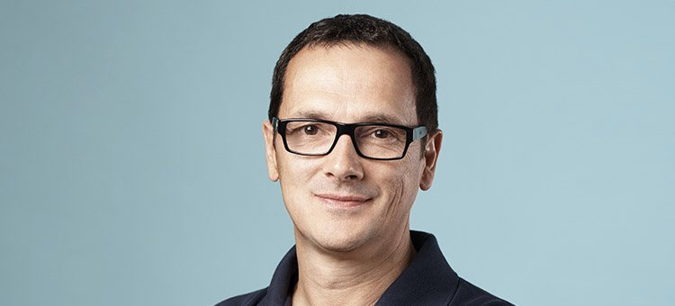
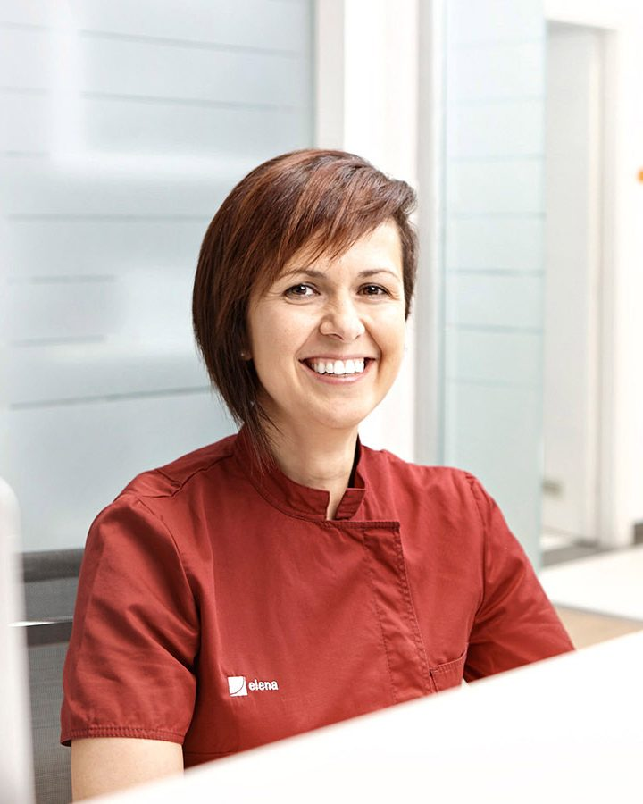
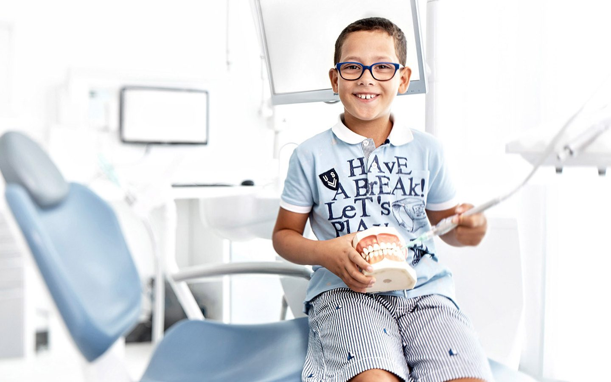
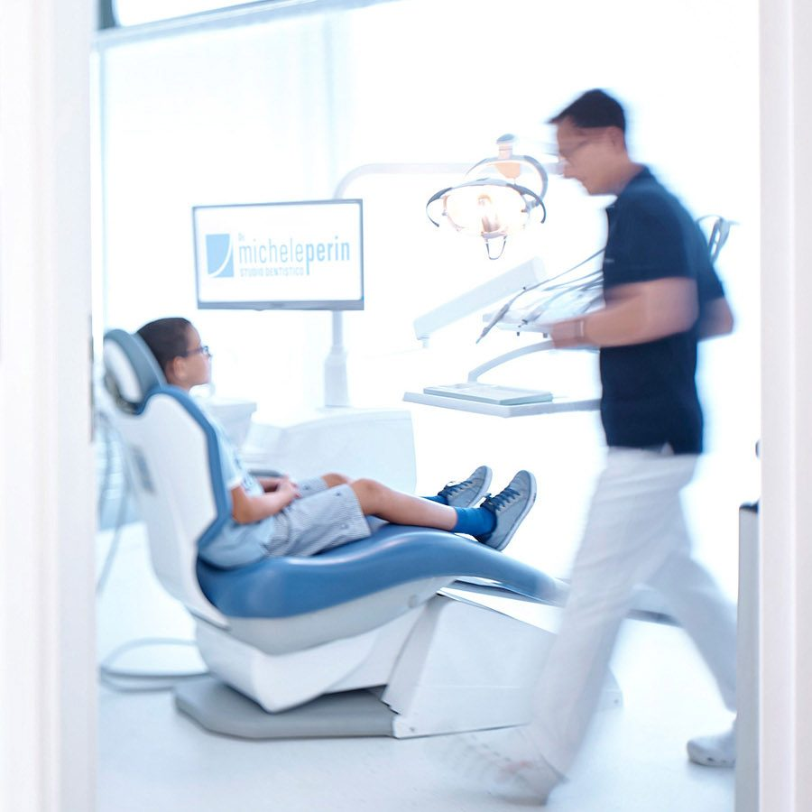
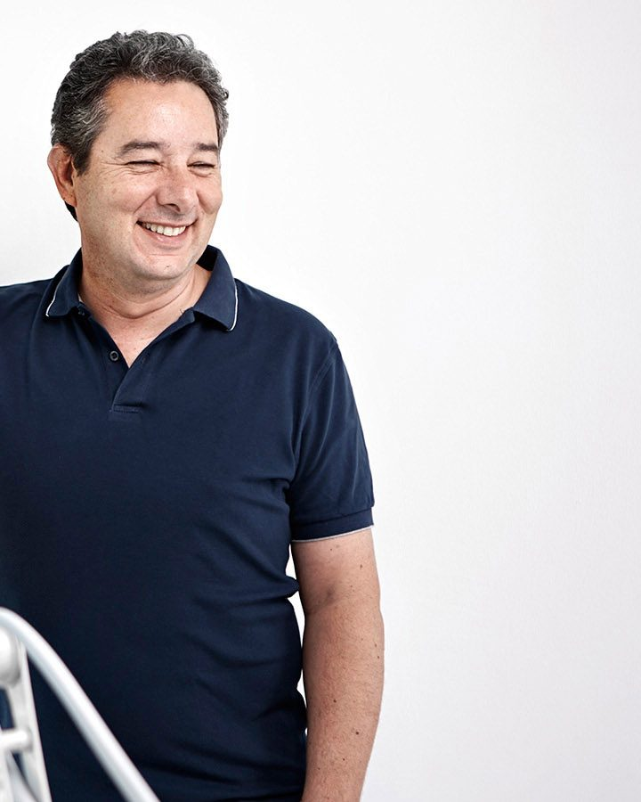
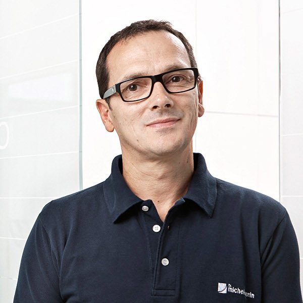
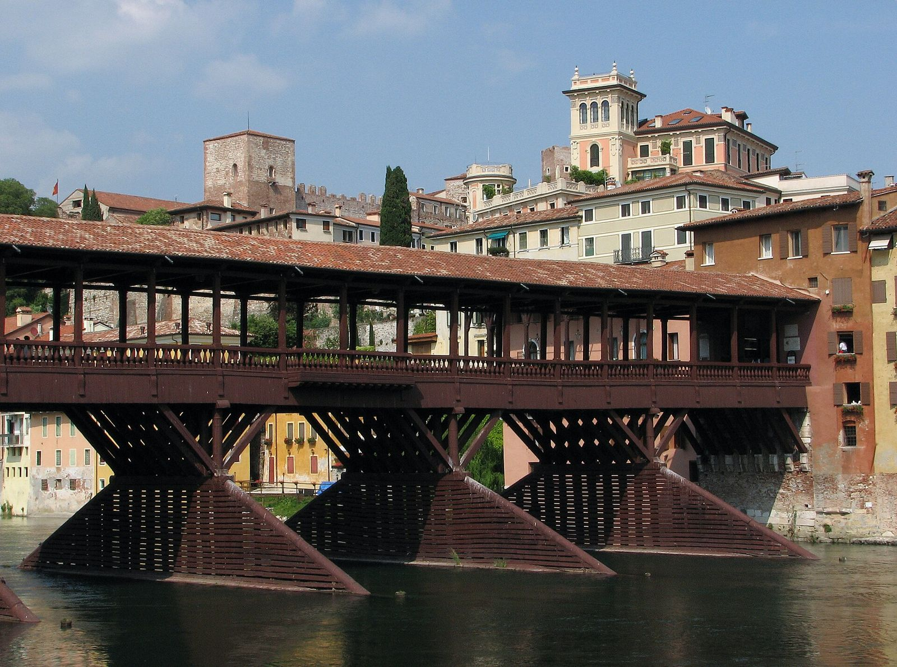

Specializzati
in 
persone
Studio dentistico a Bassano del Grappa. Il dott. Michele Perin e la sua squadra, in via Bortolo Sacchi 3.
Orari di apertura qui sotto, nella sezione Dove e quando.
Uno studio fatto di persone
Per noi il centro di ogni cura è il paziente. Non solo protocolli, ma cure su misura.



Le cure che facciamo

| Si comincia | Prima visita con diagnosi completa | dentista |
|---|---|---|
| Prevenzione | Igiene dentale programmata | igienista |
| Prevenzione | Controlli periodici | dentista |
| Cura | Conservativa: carie e otturazioni | dott. Perin |
| Cura | Endodonzia: cura del nervo | dott. Perin |
| Cura | Parodontologia: le gengive | in équipe |
| Ricostruire | Protesi | dott. Perin |
| Ricostruire | Implantologia | dott. Perin |
| Ricostruire | Impronte digitali con scanner | Cerec Omnicam |
| Sorriso | Ortodonzia | specialista |
| Sorriso | Estetica e sbiancamento | dentista |
| Bambini | Cure senza paura, con i cartoni | tutto lo staff |
Il dottor Michele Perin
- Via Bortolo Sacchi 3, Bassano del Grappa
- Oltre vent'anni di esperienza
- Garanzia scritta sul lavoro

Michele Perin è il titolare dello studio. È laureato in Odontoiatria e Protesi Dentaria e segue in prima persona implantologia, conservativa e protesi. Ha oltre vent'anni di esperienza e lavora con dentisti, igienisti e assistenti preparati.Siamo uno dei pochi studi che danno una garanzia scritta del lavoro eseguito. E poi c'è la cordialità: vogliamo che tu stia a tuo agio, anche dal dentista.
Cosa dicono i pazienti
4,6 su 5 da 22 recensioni su Google.
Natura
“Ottimo studio dentistico, accogliente, il dottor Perin una persona simpatica ma con una grande professionalità ti fa sentire a tuo agio.”
Asia P.
“Complimenti per la professionalità a partire da Elena il dottore non si discute, attento gentile, paziente e soprattutto sa fare anestesie senza dolore, poi un complimento a Fanny, bravissima meticolosa a fare igene
Gran bella squadra ah dimenticavo la piccola Greta, bravi”
Ambra M.
“Il Dott Perin e tutto il suo suo staff di medici, assistenti e soprattutto la bravissima ed efficiente segretaria Elena sono il TOP degli studi medici.”
Dove e quando
Scrivici o chiamaci per la prima visita o per un controllo.
Guarda gli orari qui sotto.
| Lunedì | dalle 8:30 alle 19:00 |
|---|---|
| Martedì | dalle 10:00 alle 19:00 |
| Mercoledì | dalle 8:30 alle 19:00 |
| Giovedì | dalle 10:00 alle 19:00 |
| Venerdì | dalle 8:30 alle 15:30 |
| Sabato e domenica | chiuso |

Tel. 0424 568407
36061 Bassano del Grappa (VI)